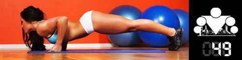

100 Дневный воркаут
<==== Вернуться к оглавлению
День 49. Завершение БАЗОВОГО блока

Сегодня наступил последний день БАЗОВОГО блока, а это значит, что нам с вами пришла пора подводить определённые промежуточные итоги и смотреть, чего мы смогли добиться за это время!
Во-первых
, я думаю, что всем будет интересно узнать свои новые максимумы в упражнениях, поэтому рекомендую после разминки протестировать себя. Необязательно по всем упражнениям, можно только по тем, где вы хотели поднять свои результаты.
Будет очень здорово, если в своём сегодняшнем сообщении вы напишите свои новые показатели, например:
Подтягивания: было - 15, стало - 20 (+5) Отжимания от пола было - 30, стало - 40 (+10)
И т.д.
Я не большой поклонник сразу после разминки делать на максимум, потому что у меня есть определенные опасения что такой подход может быть опасен для сердечно-сосудистой системы. Поэтому предлагаю следующий вариант. Разомнитесь-разогрейтесь и выполните первый подход примерно на 30-50% от своего максимума. Затем отдохните 5-10 минут (нужно успокоить ССС и нервную систему) и сделайте следующий подход на 60-100%. На мой взгляд такая проходка более безопасна, ну а с точки зрения максимумов она не играет роли (если время между подходами достаточно было для отдыха), я проверял на 10-20-30 подтягиваниях, так что и для других упражнений должно работать.
В зависимости от вашего максимума будет удобно делать 1 или 2 пробных подхода, например если ваш предполагаемый максимум - 10, я бы делал 3 и 6 в качестве пробных, а потом на максимум. А если ваш максимум 8, я бы делал 4 и 8 сразу. Какая-то такая логика, но тут больше нужно чувствовать свой организм. Например на 25 максимум в подтягиваниях я делал 10 и 25, потому что делать 10-20-25 нет особого смысла для меня, как и 8-16-25, а вот на 30 я делаю 10-20-30.
Согласитесь, гораздо приятнее осознавать, что ваш новый максимум - это не просто "на свежачок один раз сделали", а это ваш стабильный новый результат
Во-вторых
, если у вас была цель набрать массу или сбросить лишний вес, то сейчас самое время провести измерения и посмотреть, как обстоят дела с этим аспектом.
Ну а если вы в своём сообщении ещё добавить строчку про вес, например:
Вес: было - 55кг, стало - 60кг (+5кг)
Будет очень здорово, если вы поделитесь этой информацией!!!
Если есть участники, которые настолько изменились за 50 дней, что их фотки смогут мотивировать других начать заниматься, выкладывайте сюда тоже, не стесняйтесь!
В-третьих
, мы с
ogrudko
хотим сделать программу ещё более эффективной и полезной, поэтому будем рады услышать ваши комментарии по поводу того, чего вам не хватало в рамках БАЗОВОГО блока, что в него нужно добавить, а может быть что-то стоит из него убрать или какую-то информацию давать раньше, а какую-то, наоборот, позже. В общем если вы добавите в свои сообщения подобные комментарии, то будет ещё лучше!
======> День 50. Схема тренировок ПРОДВИНУТОГО блока